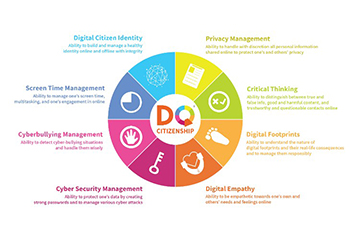
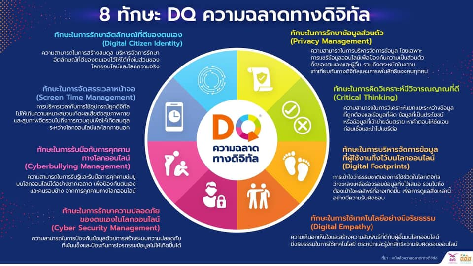

ความฉลาดทางดิจิทัล (Digital intelligence) ความเป็นพลเมืองดิจิทัล (Digital Citizenship) เป็นพลเมืองที่มีความสามารถในการใช้อินเทอร์เน็ตในการ บริหารจัดการ ควบคุม ก ากับตน รู้ผิดรู้ถูก และรู้เท่าทัน เป็นบรรทัดฐานในการใช้เทคโนโลยีดิจิทัลอย่าง เหมาะสม มีความรับผิดชอบ เรียนรู้ที่จะใช้เทคโนโลยีอย่างชาญฉลาด และปลอดภัย พลเมืองดิจิทัลจึงต้อง ตระหนักถึงโอกาสและความเสี่ยงในโลกดิจิทัล เข้าใจถึงสิทธิและความรับผิดชอบในโลกออนไลน์ ความเป็น พลเมืองดิจิทัล นับเป็นมาตรฐานหนึ่งด้านทางเทคโนโลยีการศึกษาที่เสนอโดยสมาคมเทคโนโลยีการศึกษา นานาชาติ (ISTE : International Society for Technology in Education) เพื่อให้ผู้เรียนสามารถแสดง ความเข้าใจประเด็นทางสังคม วัฒนธรรม และความเป็นมนุษย์ ที่เกี่ยวข้องกับเทคโนโลยีสารสนเทศ และ ปฏิบัติตนอย่างมีจริยธรรมและตามครรลองกฎหมายให้ใช้ข้อมูลข่าวสารได้อย่างปลอดภัย ถูกกฎหมาย ซึ่งมี ความส าคัญในทักษะแห่งการเรียนรู้ในศตวรรษที่ 21 ทักษะส าคัญที่จะท าให้เป็นพลเมืองดิจิทัลที่สมบูรณ

